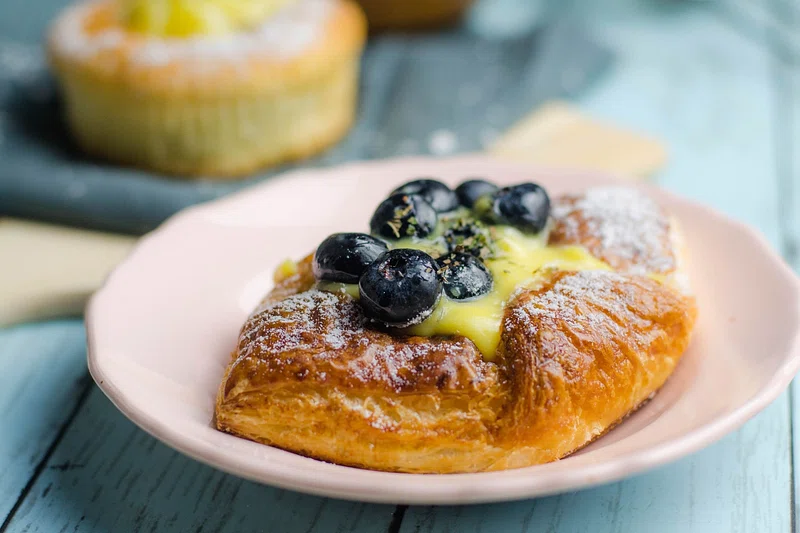

Blueberry Scones

Description
Delicious blueberry scones! These scones will absolutely melt in your mouth
with how they crumble, especially with that subtle sweetness only
blueberries can offer. With how quick and easy this recipe is, it's sure to
become a household staple!
- Prep Time: 15 mins
- Cook Time: 20 mins
- Total Time: 35 mins
- Servings: 12
- Yield: 12 scones
Ingredients
- 2 cups all-purpose flour
- ¼ cup packed brown sugar
- 1 tablespoon baking powder
- ¼ teaspoon salt
- ¼ cup chilled unsalted butter, cut into pieces
- 1 cup fresh blueberries
- ¾ cup half-and-half cream
- 1 large egg
Steps
- Gather all ingredients. Preheat the oven to 375 degrees F (190 degrees C).
- Combine flour, brown sugar, baking powder, and salt in a bowl. Cut in cold butter with two knives or a pastry blender until the mixture resembles coarse crumbs. Add blueberries and toss to combine.
- Whisk cream and egg together in a separate bowl until well combined; slowly pour into dry ingredients and stir with a rubber spatula until a dough starts to form.
- Transfer mixture to a lightly floured surface and knead just until it comes together, 3 or 4 times; don't overwork the dough. Divide dough in half, then form each half into a 6-inch round.
- Transfer to an ungreased baking sheet and cut each round into 6 wedges.
- Bake in the preheated oven until light golden brown, about 20 minutes. Serve warm.